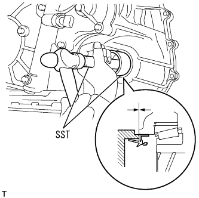
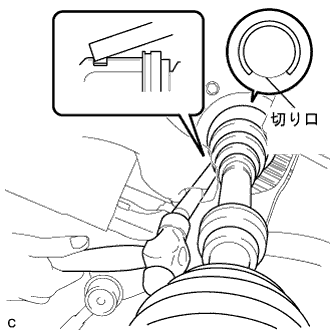
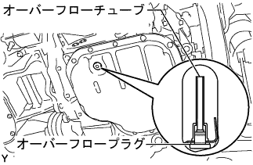
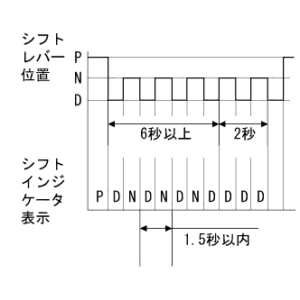

CVT Oil Seal No.2 (K112F) Installation |
| 1. Install CVT Type T Oil Seal NO.2 |
 |
Using SST and a hammer, install a new oil seal No.2.
Apply MP grease No.2 to the lip of the oil seal No.2.
| 2. Install Front Drive Shaft Assembly LH |
 |
Apply CVT fluid TC to the spline of the inboard joint assembly LH.
Face the snap ring opening downward.
Align the splines of the drive shaft and transaxle, and insert the drive shaft assembly LH using a brass bar and hammer.
| 3. Install Front Axle Assembly LH |
Push the front axle assembly LH toward the outside of the vehicle, align the splines of the front drive shaft assembly LH with the front axle assembly LH, and insert it.
| 4. Install Front Suspension Arm Sub-assembly Lower NO.1 LH |
 |
Push down the front suspension lower arm No.1 LH, install the front lower ball joint LH, and tighten it with the 1 bolts and 2 nuts.
| 5. Install Front Stabilizer Link Assembly LH |
 |
Install the front stabilizer link assembly LH to the shock absorber w/ coil spring with the nut.
| 6. Install Tie Rod End Sub-assembly LH |
 |
Connect the tie rod end LH to the steering knuckle and install it with the castle nut.
Install a new cotter pin.
| 7. Install Speed Sensor Front LH |
 |
Install the flexible hose bracket and speed sensor harness bracket at part A to the absorber bracket with the bolt.
Install the flexible hose bracket at part B to the steering knuckle with the bolt.
 |
Install the speed sensor FR LH to the steering knuckle with the bolt.
| 8. Install Front Axle Shaft Nut LH |
 |
Using a chisel and hammer, stake the front axle hub nut LH.
| 9. Add, Inspect and Adjust CVT Fluid |
Vehicle Condition Check
Work Content Check
Refer to the work flow below and follow the procedure.

Add Fluid [*1]
Keeping the vehicle level, lift it up.
Remove engine under cover No.1.
Remove the engine under cover rear LH.
 |
Using a socket hexagon wrench 6, remove the overflow plug.
 |
Using a socket hexagon wrench 6, check that the overflow tube is tightened to the specified torque.
 |
Remove the refill plug.
 |
Add fluid through the refill hole until fluid flows out of the overflow.
|
Using a socket hexagon wrench 6, temporarily tighten the overflow plug.
Add the specified amount of fluid through the refill hole.
| Related Work | Refill Amount (Reference) | |
|---|---|---|
| When the oil pan is removed/installed, when the drive shaft is removed and when an oil seal is replaced | 1.9L | |
| When the torque converter assembly is removed and when K112F CVT oil seal No. 1 is replaced | 3.6L | |
|
Temporarily tighten the refill plug.
Lower the vehicle.
Add Fluid [*2]
Keeping the vehicle level, lift it up.
Remove engine under cover No.1.
Remove the engine under cover rear LH.
Remove the refill plug.
Add the specified amount of fluid through the refill hole.
| Related Work | Refill Amount (Reference) | |
|---|---|---|
| When the oil cooler and cooler hoses have been removed | 0.4L | |
| When oil seepage, etc. has been repaired | 0.4L | |
| When the transaxle assembly has been replaced (new torque converter assembly used) | 6.2L | |
| When the transaxle assembly has been replaced (torque converter assembly reused) | 5.6L | |
Temporarily tighten the refill plug.
Lower the vehicle.
Switching to Oil Temperature Detection Mode (with TC Terminal Shorted) [*3]
Turn IG ON.
Turn OFF the switches for the air conditioning, audio system, etc.
Turn IG OFF.
 |
Using SST, connect terminals 13 (TC) and 4 (CG) of DLC3.
Start the engine.
Slowly move the shift lever from P to D, then shift it back to P.
 |
Switch to oil temperature detection mode.
| Oil Temperature Detection Mode Switching Procedure |
|---|
| Perform the N - D operation within 1.5 seconds |
| Perform the above operation continuously for 6 seconds or more |
 |
The meter indicator light [D] illuminates for 2 seconds and then goes off.
 |
Depending on the fluid temperature, the meter indicator light comes on, goes off or blinks.
Fluid Temperature Adjustment (with TC Terminal Shorted) [*4]
Move the shift lever to P.
|
Disconnect terminals 13 (TC) and 4 (CG) of DLC3.
To raise the CVT fluid temperature, warm up the engine at idle.
|
As soon as the meter indicator light [D] illuminates, lift up the vehicle.
Switching to Oil Temperature Detection Mode (Using SST (TaSCAN)) [*5]
Connect SST (TaSCAN) to DLC3.
Start the engine with the switches for the air conditioning, audio system, etc. turned OFF.
Select the Active Test (TC terminal ON), and with the A/T oil temperature displayed, turn the TC terminal ON.
Slowly move the shift lever from P to D, then shift it back to P.
 |
Switch to oil temperature detection mode.
| Oil Temperature Detection Mode Switching Procedure |
|---|
| Perform the N - D operation within 1.5 seconds |
| Perform the above operation continuously for 6 seconds or more |
|
The meter indicator light [D] illuminates for 2 seconds and then goes off.
|
Depending on the fluid temperature, the meter indicator light comes on, goes off or blinks.
Fluid Temperature Adjustment (Using SST (TaSCAN)) [*6]
Move the shift lever to P.
Turn the TC terminal from ON to OFF.
To raise the CVT fluid temperature, warm up the engine at idle.
|
As soon as the meter indicator light [D] illuminates, lift up the vehicle.
Checking Fluid Level [*7]
|
Using a socket hexagon wrench 6, remove the overflow plug.
Check the fluid condition.
If it overflows, go to step [*8]
If it does not overflow, go to step [*9]
Adjusting Fluid Level (When Overflowing) [*8]
 |
When the fluid flow changes from a thin stream to drips, fully tighten the overflow plug with a new gasket.
|
Fully tighten the refill plug with a new gasket.
Install the engine under cover rear LH.
Install the engine under cover No.1.
Lower the vehicle.
Turn IG OFF and disconnect SST (TaSCAN).
Refilling Fluid (When Not Overflowing) [*9]
|
Remove the refill plug.
|
Add fluid through the refill hole until fluid flows out of the overflow.
 |
When the fluid flow changes from a thin stream to drips, fully tighten the overflow plug with a new gasket.
|
Fully tighten the refill plug with a new gasket.
Install the engine under cover rear LH.
Install engine under cover No.1.
Lower the vehicle.
Turn IG OFF and disconnect SST (TaSCAN).
| 10. Inspect for CVT Fluid Leaks |
| 11. Install Engine Under Cover Rear LH |
Install the engine under cover rear LH with the 5 clips.
| 12. Install Engine Under Cover NO.1 |
Install the engine under cover No.1 with the 6 bolts and 7 clips.
| 13. Install Front Tire LH |
| 14. Perform Test Mode Inspection (Speed Sensor System) |
)| 15. Inspect and Adjust Front Wheel Alignment |
)